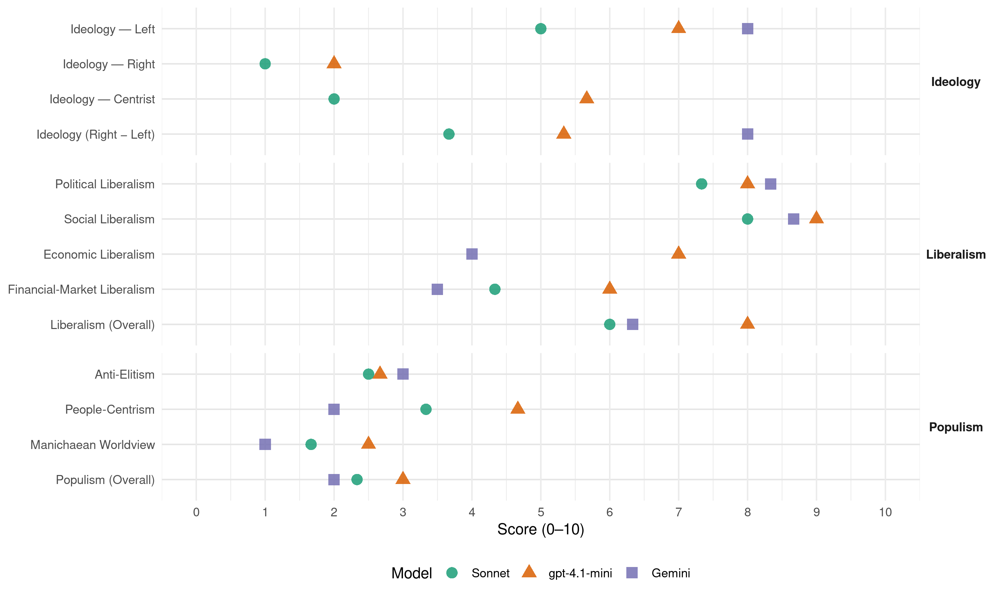

DnA (Norway, 2005)
manifesto_id 12320_200509
Get full text: This site shows derived annotations and short verbatim quotes only. The full manifesto text is © Manifesto Project / WZB — obtain it via manifesto-project.wzb.eu using the manifesto_id above.
Headline scores
| Dimension | Sonnet | gpt-4.1-mini | Gemini |
|---|---|---|---|
| Populism (Overall) | 2.3 | 3.0 | 2.0 |
| Anti-Elitism | 2.5 | 2.7 | 3.0 |
| People-Centrism | 3.3 | 4.7 | 2.0 |
| Manichaean Worldview | 1.7 | 2.5 | 1.0 |
| Ideology (Right − Left) | 3.7 | 5.3 | 8.0 |
| Liberalism (Overall) | 6.0 | 8.0 | 6.3 |
| Political Liberalism | 7.3 | 8.0 | 8.3 |
| Social Liberalism | 8.0 | 9.0 | 8.7 |
| Economic Liberalism | – | 7.0 | 4.0 |
| Financial-Market Liberalism | 4.3 | 6.0 | 3.5 |
Evidence per dimension
Economic Liberalism
Gemini · score 4.0 · verified · chunk 1
“bruke offentlige styringsredskaper som internasjonale avtaleverk”
For å nå politiske mål vil vi derfor bruke offentlige styringsredskaper som internasjonale avtaleverk, lover og forskrifter, støtteordninger, konsesjoner, reguleringer og offentlig kjøp, drift og eierskap der det er nødvendig.
Gemini · score 4.0 · verified · chunk 2
“nei til privatisering og konkurranseutsetting”
solidarisk fellesskap. Derfor sier Arbeiderpartiet nei til privatisering og konkurranseutsetting av grunnleggende velferdstjenester.
Gemini · score 4.0 · mixed · chunk 3
“privatisering og en liberalistisk økonomisk politikk”
utviklingsland. Globalt ansvar for miljøproblemene Befolkningsvekst, økt forbruk av varer og ressurser i de rike land, kortsiktige økonomiske mål og fattigdom bidrar til globale miljøproblemer. Som en betydelig olje- og gassnasjon og som et av verdens rikeste land, har Norge et særlig ansvar for å oppfylle og videreutvikle internasjonale avtaler som skal sikre miljøhensyn og redusere klimaproblemene. Den aller største utfordringen er de globale klimaproblemene. Skal disse utfordringene løses må ikke bare Kyoto-avtalen gjennomføres, den må også følges opp med videre reduksjon av klimautslippene. Vi vil arbeide for en internasjonal ”Kyoto 2”-avtale som sikrer reduserte utslipp av klimagasser fram mot 2020. En slik avtale må bidra til at teknologioverføringer fra den rike til den fattige verden blir gjennomførbare. Slik kan fattige land sikres en rettferdig økonomisk vekst de kommende tiår uten større utslipp enn nødvendig. For å sikre at avtaler som skal beskytte miljø og ressurser overholdes, må framtidens miljøavtaler inneholde sanksjonsmuligheter. Vi ønsker derfor å utvikle FNs miljøprogram til en Verdens Miljøorganisasjon med sanksjonsmuligheter. En stadig økende privatisering av fellesgoder er en trussel mot miljø og grunnleggende menneskerettigheter. Innsatsen for tilgangen på rent vann og ren energi må økes. Internasjonal handel må ta hensyn til miljø, og det er derfor behov for miljøreguleringer. Internasjonale miljøavtaler skal være overordnet WTO-reglene. Arbeiderpartiet vil: bidra til internasjonalt press på de land som ikke har ratifisert Kyoto-avtalen, særlig industriland. være en pådriver for nye internasjonale forpliktende klimaavtaler etter at Kyoto-avtalen går ut i 2012. at Norge må bidra med kunnskap til arbeidet for en omlegging til mer miljøvennlige og fornybare energikilder. bidra til å redusere de globale klimautslippene gjennom nasjonale tiltak, bilateralt samarbeid og internasjonale tiltak, som f.eks. Verdensbankens karbonfond, og ved å støtte kapasitets- og kunnskapsbygging på klimaområdet i utviklingsland. at Konvensjonen om biologisk mangfold i sterkere grad følges opp og gjøres mer forpliktende. Europa og EU Norge har alltid hatt sterke bånd til resten av Europa. Vår visjon for fremtidens Europa handler om å finne løsninger på de problemer som opptar folk. Arbeiderpartiet ønsker å bidra til et fredelig Europa preget av samarbeid og demokrati. Vi ønsker et Europa som går fremst i arbeidet for global rettferdighet og fordeling, med respekt for internasjonale regler og bærekraftig utvikling. Vi ønsker et Europa som gir innbyggerne arbeid, økt velferd, rettferdig fordeling og en sterk velferdsstat. Den Europeiske Union (EU) er sentrum for det europeiske samarbeidet. EU er i stadig utvikling, og står fortsatt foran betydelige utfordringer. Siden vi tok stilling til norsk EU-medlemskap i 1994, er EU blitt utvidet med 10 nye medlemsland og kan om en del år omfatte det aller meste av Europa. EU har utarbeidet en ny grunnlovstraktat som det nå skal holdes folkeavstemming om i en rekke land. Den siste fasen av EUs felles økonomiske politikk er gjennomført ved at euroen er innført i størstedelen av EU-området. Et eventuelt tyrkisk EU-medlemskap kan medføre en ny, stor endring i Europa. Et så tett og omfattende samarbeid mellom et stort, muslimsk land og et stort antall land med kristen kulturbakgrunn, vil kunne være et viktig brobyggende bidrag til fred, stabilitet og demokrati i regionen, samt dialog mellom kulturer og religioner. Norges tilknytning til EU bygger i dag på EØS-avtalen og konsultasjonsordninger avledet av denne, samarbeidsformer innenfor NATO, samt samarbeid på politi- og justissektoren gjennom avtalen om norsk medlemskap i Schengen-samarbeidet. EØS-avtalen har vært positiv og viktig for Norge. Gjennom EØSavtalen har norsk næringsliv med noen unntak hatt full tollfrihet og like konkurransevilkår på EU-markedet som bedrifter innen EU, samtidig som vi på de områdene EØS-avtalen omfatter har beskyttelse mot anti-dumpingstiltak. EØS er også rammen for et mellomstatlig samarbeid med EU på andre områder som blant annet miljø, utdanning, forskning, helse og kultur. Gjennom EØS-kontingenten bidrar vi til økonomisk og sosial utjevning i forhold til de nye medlemslandene i EU. Det norske folk har ved to folkeavstemninger sagt nei til norsk EU-medlemskap. Arbeiderpartiet har begge ganger anbefalt at det beste for Norge er å bli medlem i EU. Landsmøtet i Arbeiderpartiet har konkludert med at vi bør søke samarbeid og innflytelse, og ikke stille oss utenfor et samarbeid som kan skape bedre grunnlag for økt politisk styring og bedre utjevning av velferden i Europa, og at et medlemskap gir en politisk innflytelse og deltakelse som ikke ivaretas gjennom EØS-avtalen. Tettere samarbeid og integrasjon i Europa er av virkemidlene som sikrer et fredelig kontinent. Dette er fortsatt Arbeiderpartiets syn. Samtidig skal Arbeiderpartiet være et parti med rom for ulike syn i EU-debatten. Ved begge de tidligere folkeavstemmingene har en del av partiet, blant annet AUF, ment at det er best å ikke bli medlem av EU. Det er også situasjonen i dag. Begrunnelsen er hensynet til full sysselsetting, muligheten til å føre en sosialdemokratisk politikk i Norge og handlefrihet internasjonalt. Arbeiderpartiet mener Norge må ha handlefrihet når det gjelder en eventuell medlemskapssøknad i neste stortingsperiode. En forutsetning for en slik ny søknad er en stabil tilslutning i folket. En eventuell søknad om medlemskap vil være gjenstand for ny landsmøtebehandling i Arbeiderpartiet. Arbeiderpartiet mener en ny EU-søknad bør behandles på samme måte som tidligere, og vil respektere resultatet av en folkeavstemming. Arbeiderpartiet vil: ha en aktiv europapolitikk, som uavhengig av norsk medlemskap tar vare på viktige målsettinger for Europas utvikling og for Norge. bidra til et tettere felles samarbeid med europiske land i øst og sør som ennå ikke er medlemmer av EU. Slikt samarbeid kan bidra til å fremme demokrati og menneskerettigheter, stabilitet og fred. arbeide for et Europa som har full sysselsetting som mål og som bygger på respekt for lønnstakernes rettigheter og forhindrer sosial dumping. at Europa i nært samarbeid med FN tar ansvar for å forebygge og håndtere kriser. at Europa og EU styrker arbeidet for bærekraftig utvikling og en bedre miljøpolitikk, blant annet gjennom en god landbrukspolitikk og ressursforvaltning. arbeide for økonomisk og sosial utjevning mellom landene i Europa. bygge opp økt kunnskap om EU-samarbeidet og EØS-avtalen, og økt bredde i Norges kontakter mot EU og EU-landene. styrke det nordiske samarbeidet og annet regionalt samarbeid i Europa. En aktiv nordområdepolitikk Norge må samarbeide med EU om en europeisk naboskapspolitikk som fremmer fred og demokrati i våre omgivelser. Det meste av norsk økonomisk sone til havs ligger nord for polarsirkelen. Det samme gjelder for en tredjedel av fastlandets kystlinje. Bevaring, høsting og videreforedling innen primærnæringen,e og særlig av de marine ressursene, er av vital betydning for Nord-Norge, og fordrer også et nært samarbeid med Russland. Arbeiderpartiet vil satse mer på våre Nordområder, både politisk, økonomisk og sosialt på en måte som ivaretar miljøet og fremmer en langsiktig, fredelig utvikling i området. Folkelig deltakelse og samarbeid over landegrensene i nord er et viktig satsingsområde. Urfolksdimensjonen må vektlegges. Arbeiderpartiet vil: ha en aktiv og offensiv nordområdepolitikk som i varetar våre interesser i nord. samarbeide med Russland for å sikre en bærekraftig utnyttelse av fiskeriressursene i Barentshavet. Fiskejuks må forhindres gjennom blant annet samordning av kontrolltiltak. arbeide for en egen multilateral Barentshavavtale, der alle interesserte parter trekkes inn, med minimumsstandarder og kjøreregler som regulerer skipsfart og andre aktiviteter i Barentshavet, ikke minst av miljøhensyn. ha en større innsats på forsking og kompetansebygging både innenfor miljø, natur og petroleumsvirksomhet i nord. Dette gjøres ved å etablere et barentsinstitutt i Kirkenes. utvikle en høy sjøsikkerhet og oljevernberedskap i nært samarbeid med russiske myndigheter. at Norge skal være en pådriver i det internasjonale samfunnet for å rydde opp i miljøproblemene på Kolahalvøya og de øvrige regionene i Nordvest-Russland. Ny sikkerhetspolitikk i en forandret verden Mange sikkerhetspolitiske utfordringer melder seg med økende tyngde: Terrorisme, spredning av masseødeleggelsesvåpen, regionale konflikter, skjøre statsdannelser og organisert kriminalitet. Dette må møtes med et bredt spekter av virkemidler, herunder bygging av retts- og politivesen, utvikling av sivile samfunn, demokratisering, humanitær innsats, langsiktig bistand, og militære midler. Vi må finne politiske løsninger på underliggende konflikter, og legge større vekt på forebyggende tiltak. Vi må bygge broer og samarbeid mellom ulike kulturer og religioner. Internasjonal styring og kamp mot fattigdom er viktig også av sikkerhetspolitiske hensyn. Skaper vi rettferdighet, skaper vi fred. Norsk sikkerhetspolitikk skal bidra til å sikre Norges suverenitet og territorielle integritet. Dette skal skje både gjennom overvåkning og tilstedeværelse i norske områder, og gjennom deltakelse i internasjonale organer og operasjoner. Sikkerhetspolitikken må beskytte individene så vel som staten. Norge må bidra til å styrke internasjonale regler, normer og standarder. FN og regionale organisasjoner er våre viktigste instrumenter for å forebygge og hindre sosiale, økonomiske og politiske spenninger. Arbeiderpartiet bygger vår sikkerhetspolitikk på norsk medlemskap i NATO. Vi vil videreutvikle NATO-samarbeidet og styrke OSSEs og Europarådets arbeid for fredelig konfliktløsing, godt styresett, demokrati og menneskerettigheter. EU er i ferd med å utvikle en bred europeisk sikkerhetspolitikk med vekt på politisk samarbeid og andre virkemidler enn kun de rent militære. Arbeiderpartiet mener det er viktig at Norge følger med i denne utviklingen og deltar i samspillet mellom det europeiske og transatlantiske samarbeidet. Norsk deltakelse i internasjonale fredsoperasjoner må være klart og entydig forankret i folkeretten og FN. For å ivareta hjelpearbeidernes og organisasjonenes sikkerhet, er det viktig å skille klart mellom militær innsats og humanitær nødhjelp. Arbeiderpartiet vil samarbeide med EU, NATO og andre om kombinerte sivile og militære innsatser for å fremme menneskelig så vel som statlig sikkerhet. Deltakelse i FN-ledede fredsoperasjoner og styrking av FNs krisehåndteringsevne må prioriteres. Vi må derfor involvere oss mer i FNs operasjoner for fred. Arbeiderpartiet vil føre en aktiv politikk for nedrustning og ikke-spredning av masseødeleggelsesvåpen. NATO må revurdere sin atomstrategi og redusere atomvåpnenes rolle i sikkerhetspolitikken. Vårt mål er fullstendig avskaffelse av atomvåpen. Arbeiderpartiet vil: bekjempe terror med en bred strategi, hvor kamp mot fattigdom og urettferdighet er en viktig del. arbeide for eliminering av alle strategiske og taktiske atomvåpen. arbeide for en avtale som hindrer spredning av anlegg for anriking av uran og gjenvinning av plutonium. ha flere atomvåpenfrie soner og at det etableres en sone fri for masseødeleggelsesvåpen i Midtøsten. arbeide for at prøvestansavtalen skal tre i kraft. gå imot opprustning i verdensrommet. støtte programmer som sikrer og eliminerer våpenmateriale og våpenarsenaler. bidra til fortgang i gjennomføringen av avtalene om kjemiske og biologiske våpen. arbeide for økt internasjonal kontroll med håndvåpen. føre stram kontroll med norsk våpeneksport. gå inn for å opprette regionale overvåkingsmekanismer som ledd i FNs konfliktforebyggende virksomhet. støtte programmer som sikrer våpenmateriale og våpenarsenaler, og i regi med FN støtte en global nedbygging av arsenaler og våpenindustri. Norske forsvarsutfordringer Forsvaret må tilpasse seg et moderne trusselbilde. Nye og mer sammensatte trusler øker behovet for et fleksibelt Forsvar som kan håndtere et bredt spekter av ulike oppgaver. Forsvaret må ha tilgjengelig operativt personell til innsats i kriser, konflikter og krig, ute og hjemme. Forsvaret skal ivareta vår nasjonale sikkerhet og trygge vår territoriale suverenitet. Samtidig må Norge bidra til fred og sikkerhet internasjonalt. Arbeiderpartiet vil fortsette å bygge vår totale sikkerhet på internasjonalt samarbeid og allmenn verneplikt. Omstillingen i Forsvaret må fortsette, og ubalansene mellom drift og investeringer må rettes opp. Forsvaret har ikke i tilstrekkelig grad klart å frigjøre ressurser til nye oppgaver. Arbeiderpartiet skal være en pådriver for samsvar mellom Forsvarets struktur, oppgaver og de vedtatte finansielle rammer. Den vedtatte langtidsplanen for Forsvaret må følges opp i perioden. Arbeiderpartiet sier nei til omfattende privatisering av Forsvarets støttefunksjoner. Vi vil fokusere på den ressurs som de ansatte og deres kompetanse utgjør for utviklingen av Forsvaret, og omstillingen i Forsvaret skal skje i nært samarbeid med de ansattes organisasjoner. Arbeiderpartiet vil: tilpasse Forsvaret til et moderne trusselbilde. at Forsvarets oppgaver, struktur og økonomiske rammer må samsvare, og at Forsvarets økonomistyring må bedres. Flyktninger og innvandring Det er i dag millioner av flyktninger i verden i eksil. De er tvunget til å forlate hjemlandet på grunn av forfølgelse, krig og konflikt. Enda flere lever på flukt inne i sitt eget land. Mennesker på flukt risikerer fengsel, tortur og kanskje død på grunn av sine meninger eller sin stilling i samfunnet. Derfor slår internasjonal rett fast at mennesker i slike situasjoner har rett på beskyttelse. Arbeiderpartiet står for en human, solidarisk og rettssikker flyktningpolitikk. Norge har en klar moralsk forpliktelse til å ta sitt ansvar for mennesker i nød. Vi bygger vår asyl- og flyktningpolitikk på internasjonale rettsprinsipper uttrykt gjennom menneskerettighetserklæringen og flyktningkonvensjonen. Her har vi forpliktet oss til å ta imot et visst antall kvoteflyktninger gjennom FN, i tillegg til de som søker opphold på individuelt grunnlag. Skal flyktningpolitikken være rettferdig, er det viktig å ha klare regler og internasjonalt samarbeid. Grunnløse asylsøknader og misbruk av asylordningen må hindres, slik at det ikke får ødelegge for dem som har et faktisk behov for beskyttelse. Norsk innvandringspolitikk er regulert. Arbeidsinnvandrere utenfor EØS-området må ha kompetanse det er særlig behov for. Arbeiderpartiet vil opprettholde dette kravet. Samtidig må vi ikke bidra til å tappe fattige land for verdifull arbeidskraft. Utvidelsen av antall EU-land, har imidlertid muliggjort en arbeidsinnvandring i større omfang enn tidligere. Arbeiderpartiet er positiv til den nye arbeidskraftinnvandringen som kommer som en følge av EU-utvidelsen, og mener at de må bys de samme lønns- og arbeidsvilkår som norske arbeidere. For å sikre at norske lønns- og arbeidsvilkår overholdes ved arbeid i Norge, vil vi ta initiativ til en bred vurdering av om lovverk og virkemidler knyttet til utstasjonering av arbeidstakere, allmenngjøring av tariffavtaler, håndheving og kontroll er hensiktsmessig utformet. Arbeiderpartiet vil: bidra til en større internasjonal innsats for internt fordrevne flyktninger. øke kvoten for overføringsflyktninger fra FN til 1500 personer i året. forsere arbeidet med utsendelse av utlendinger med ulovlig opphold og intensivere arbeidet med å få til returavtaler med flere land. øke ressursene og gjennomgå regelverk for å sikre en bedre kontroll med og oppfølging av utlendinger som oppholder seg ulovlig i Norge. etablere kompetansemottak for asylsøkere og flyktninger med traumatiske opplevelser bak seg, slik at de kan gis et godt behandlingstilbud. forbedre vilkårene for enslige flyktningbarn som kommer til Norge. at såkalte ureturnerbare asylsøkere som samarbeider med norske myndigheter om hjemreise, ikke må fratas dagens støtte. For asylsøkere med endelig avslag som har muligheter til frivillig å reise, men som nekter å samarbeide, bør det vurderes bosetting i egnede mottak, samtidig som arbeidet med uttransportering må intensiveres. gi Utlendingsdirektoratet innsyn i strafferegisteret, slik at kvinner kan opplyses om at ektefelle er dømt for vold eller utukt. at norske statsborgere som er dømt for vold mot ektefelle skal få fem års karantene før vedkommende kan få familiegjenforening med ny utenlandsk ektefelle. engasjere oss aktivt på europeisk plan for å hindre at EUs nye tjenestedirektiv svekker muligheten til å håndheve nasjonale lønns- og arbeidsvilkår. ta bort underholdskravet for dem som har fått opphold på humanitært grunnlag. at asylsøkere som har fått endelig avslag må samarbeide med norske myndigheter. I de tilfeller der en samarbeider med norske myndigheter om utreise, men der utreise av ulike årsaker ikke er mulig, skal disse få ny mulighet til å få sin sak behandlet. at barnevernet skal ha omsorgsansvaret for unge enslige asylsøkere.
gpt-4.1-mini · score 7.0 · verified · chunk 1
“Vi ønsker en åpen økonomi med samfunnsbevisste aktører og et aktivt statlig engasjement”
Vi ønsker en åpen økonomi med samfunnsbevisste aktører og et aktivt statlig engasjement. Vi vil legge til rette for private næringsaktører med gode rammebetingelser og forutsigbarhet.
gpt-4.1-mini · score 7.0 · verified · chunk 2
“stabile og konkurransedyktige skattemessige rammevilkår for næringslivet”
Arbeiderpartiet vil: at det fortsatt skal være fradrag for utgifter til arbeidsreiser. gjennomgå og rydde opp i særavgiftene med sikte på å endre avgifter som skaper ulemper for norske produksjonsarbeidsplasser i konkurranse med import. ha en omlegging av bilavgiftene for å stimulere til sikrere og mer miljøvennlige biler. styrke Skatteetaten og intensivere arbeidet mot svart arbeid og skatteunndragelser.
gpt-4.1-mini · score 7.0 · verified · chunk 3
“privatisering og en liberalistisk økonomisk politikk”
privatisering og en liberalistisk økonomisk politikk. Vi ønsker mottakeransvar og resultatorientering, der fokus rettes mot landenes egne utviklingsmål. Vi må ha mer politisk styring med penger som gis gjennom internasjonale organer.
Sonnet · score 4.0 · mixed · chunk 1
“Vi ønsker en åpen økonomi med samfunnsbevisste aktører”
Vi ønsker en åpen økonomi med samfunnsbevisste aktører og et aktivt statlig engasjement. Vi vil legge til rette for private næringsaktører med gode rammebetingelser og forutsigbarhet. Men samfunnsmessige mål er overordnet de bedriftsøkonomiske.
Sonnet · score 5.0 · mixed · chunk 2
“konkurransedyktige skattemessige rammevilkår for næringslivet”
ha stabile og konkurransedyktige skattemessige rammevilkår for næringslivet. øke fagforeningsfradraget til minst det dobbelte
Sonnet · score 4.0 · mixed · chunk 3
“privatisering og en liberalistisk økonomisk politikk”
Vi ønsker mottakeransvar og resultatorientering… privatisering og en liberalistisk økonomisk politikk. Vi ønsker mottakeransvar
Financial-Market Liberalism
Gemini · score 3.0 · verified · chunk 2
“mer styring av den globale kapitalen”
omfordeling av ressursene. I dag definerer de aktørene som har teknologi, kunnskap om markeder, og penger i stor grad de økonomiske spillereglene og de politiske rammene. Arbeiderpartiet vil jobbe for mer styring av den globale kapitalen.
Gemini · score 4.0 · verified · chunk 3
“adgang til å låne penger”
sikre kvinners rett til å inngå kontrakter, eie jord, arve, ha kontroll over og adgang til å låne penger, samt adgang til arbeidsmarkedet.
gpt-4.1-mini · score 6.0 · verified · chunk 1
“Vi vil styrke Skatteetaten og intensivere arbeidet mot svart arbeid og skatteunndragelser”
Vi vil styrke Skatteetaten og intensivere arbeidet mot svart arbeid og skatteunndragelser. Vi vil ha et skattesystem som på en effektiv måte gir stabile inntekter til fellesskapet.
gpt-4.1-mini · score 6.0 · verified · chunk 2
“arbeide for internasjonale skatteavtaler som begrenser muligheten for skatteunndragelser”
Vi må finne beskatningsformer som gjør det vanskelig å unndra seg beskatning gjennom tilpasninger eller utflagging. Derfor vil vi arbeide for internasjonale skatteavtaler som begrenser muligheten for skatteunndragelser. Arbeiderpartiet vil: at skatt mellom arbeid og kapital jevnes ut, slik at de med høye kapitalinntekter betaler mer skatt, blant annet ved utbyttebeskatning.
Sonnet · score 4.0 · verified · chunk 1
“statlig eierskap sikre inntekter til fellesskapet”
Statlig eierskap kan sikre inntekter til fellesskapet, og kan være avgjørende for å sikre nasjonalt eierskap og nasjonal forankring av nøkkelvirksomhet i Norge. Arbeiderpartiet vil ha et sterkt statlig og nasjonalt eierskap også i fremtiden.
Sonnet · score 4.0 · verified · chunk 2
“skatt på valutatransaksjoner”
Forslag som må vurderes er skatt på valutatransaksjoner, internasjonal skattlegging av flytrafikk, våpenhandel, CO2-utslipp
Sonnet · score 5.0 · verified · chunk 3
“adgang til å låne penger”
Bistanden må bidra til å sikre kvinners rett til å inngå kontrakter, eie jord, arve, ha kontroll over og adgang til å låne penger
Political Liberalism
Gemini · score 9.0 · verified · chunk 1
“Stemmerett, ytringsfrihet og rettssikkerhet er forutsetninger”
Frihet forutsetter rettigheter som skal gjelde for alle. Stemmerett, ytringsfrihet og rettssikkerhet er forutsetninger for frihet.
Gemini · score 8.0 · verified · chunk 2
“samfunnets demokratiske grunnverdier”
forventer og forlanger aktivt medspill og aksept for norske lover og samfunnets demokratiske grunnverdier. Vi vil motarbeide
Gemini · score 8.0 · verified · chunk 3
“fremme demokrati og menneskerettigheter”
Slikt samarbeid kan bidra til å fremme demokrati og menneskerettigheter, stabilitet og fred.
gpt-4.1-mini · score 8.0 · verified · chunk 1
“Stemmerett, ytringsfrihet og rettssikkerhet er forutsetninger for frihet”
Frihet for Arbeiderpartiet er frihet for alle mennesker et overordnet mål. Frihet forutsetter rettigheter som skal gjelde for alle. Stemmerett, ytringsfrihet og rettssikkerhet er forutsetninger for frihet.
gpt-4.1-mini · score 8.0 · verified · chunk 2
“Demokratiet i Den norske kirke må styrkes og videreutvikles”
Alle har rett til å velge og praktisere religion og livssyn. Alle kirker og religiøse grupper må fritt kunne utøve sin virksomhet ut fra egne verdier og selvforståelse. Arbeiderpartiet vil at det offentlige legger til rette for, og bidrar økonomisk til et mangfold av religions- og livssynsutøvelse i Norge. Demokratiet i Den norske kirke må styrkes og videreutvikles.
gpt-4.1-mini · score 8.0 · verified · chunk 3
“bygging av gode styresett og demokrati”
Det må gjøres en innsats mot korrupsjon og for å utvikle gode styresett og demokrati. Og vi må gjøre en særlig innsats for likestilling. Jenter må få et godt helsetilbud, utdanning og mulighet til arbeid.
Sonnet · score 8.0 · verified · chunk 1
“allmenn stemmerett, frie valg, flertallsstyre”
For oss er allmenn stemmerett, frie valg, flertallsstyre, vern av minoriteter og respekt for menneskerettighetene nødvendige, men ikke tilstrekkelige forutsetninger for demokrati.
Sonnet · score 7.0 · verified · chunk 2
“Demokratiet i Den norske kirke må styrkes”
Vi ønsker at Den norske kirke skal være en åpen folkekirke. Demokratiet i Den norske kirke må styrkes og videreutvikles.
Sonnet · score 7.0 · verified · chunk 3
“demokratireformer i mottakerlandene”
En slik avvikling bør knyttes til krav om fattigdomsreduksjon og demokratireformer i mottakerlandene. Bidrag til gjeldslette
Liberalism (Overall)
Gemini · score 7.0 · verified · chunk 1
“Stemmerett, ytringsfrihet og rettssikkerhet er forutsetninger”
Frihet forutsetter rettigheter som skal gjelde for alle. Stemmerett, ytringsfrihet og rettssikkerhet er forutsetninger for frihet.
Gemini · score 6.0 · verified · chunk 2
“samfunnets demokratiske grunnverdier”
forventer og forlanger aktivt medspill og aksept for norske lover og samfunnets demokratiske grunnverdier. Vi vil motarbeide
Gemini · score 6.0 · verified · chunk 3
“fremme demokrati og menneskerettigheter”
Slikt samarbeid kan bidra til å fremme demokrati og menneskerettigheter, stabilitet og fred.
gpt-4.1-mini · score 8.0 · verified · chunk 1
“Stemmerett, ytringsfrihet og rettssikkerhet er forutsetninger for frihet”
Frihet for Arbeiderpartiet er frihet for alle mennesker et overordnet mål. Frihet forutsetter rettigheter som skal gjelde for alle. Stemmerett, ytringsfrihet og rettssikkerhet er forutsetninger for frihet.
gpt-4.1-mini · score 8.0 · verified · chunk 2
“Demokratiet i Den norske kirke må styrkes og videreutvikles”
Alle har rett til å velge og praktisere religion og livssyn. Alle kirker og religiøse grupper må fritt kunne utøve sin virksomhet ut fra egne verdier og selvforståelse. Arbeiderpartiet vil at det offentlige legger til rette for, og bidrar økonomisk til et mangfold av religions- og livssynsutøvelse i Norge. Demokratiet i Den norske kirke må styrkes og videreutvikles.
gpt-4.1-mini · score 8.0 · verified · chunk 3
“bygging av gode styresett og demokrati”
Det må gjøres en innsats mot korrupsjon og for å utvikle gode styresett og demokrati. Og vi må gjøre en særlig innsats for likestilling. Jenter må få et godt helsetilbud, utdanning og mulighet til arbeid.
Sonnet · score 6.0 · mixed · chunk 1
“allmenn stemmerett, frie valg, flertallsstyre”
For oss er allmenn stemmerett, frie valg, flertallsstyre, vern av minoriteter og respekt for menneskerettighetene nødvendige, men ikke tilstrekkelige forutsetninger for demokrati.
Sonnet · score 6.0 · verified · chunk 2
“kjønnsnøytral ekteskapslov”
Arbeiderpartiet vil ha en kjønnsnøytral ekteskapslov, og endre barneloven slik at barn født inn i et ekteskap/partnerskap mellom to lesbiske kvinner sikres retten til to juridiske foreldre
Sonnet · score 6.0 · verified · chunk 3
“demokrati og menneskerettigheter, stabilitet og fred”
Slikt samarbeid kan bidra til å fremme demokrati og menneskerettigheter, stabilitet og fred. arbeide for et Europa som har full sysselsetting
Anti-Elitism
Gemini · score 3.0 · verified · chunk 1
“skattelette til de rikeste framfor velferd”
Prioritering av skattelette til de rikeste framfor velferd, samt sterkere vekt på økt konkurranse og privatisering, har svekket fellesskapsløsningene.
gpt-4.1-mini · score 3.0 · verified · chunk 1
“Prioritering av skattelette til de rikeste framfor velferd”
De siste års samfunnsutvikling har skapt et behov for en ny solidaritet i Norge. Prioritering av skattelette til de rikeste framfor velferd, samt sterkere vekt på økt konkurranse og privatisering, har svekket fellesskapsløsningene.
gpt-4.1-mini · score 2.0 · verified · chunk 2
“skatteunndragelser”
styrke Skatteetaten og intensivere arbeidet mot svart arbeid og skatteunndragelser. Økonomiske utfordringer og rammebetingelser Den teknologiske utviklingen og den økende internasjonale arbeidsdelingen danner grunnlag for fortsatt vekst i velferden.
gpt-4.1-mini · score 3.0 · verified · chunk 3
“mer politisk styring med penger som gis gjennom internasjonale organer”
Vi ønsker mottakeransvar og resultatorientering, der fokus rettes mot landenes egne utviklingsmål. Vi må ha mer politisk styring med penger som gis gjennom internasjonale organer. De fattigste landene har liten eller ingen industri, og må hjelpes til å bli mindre avhengig av svingende råvarepriser og råvareeksport.
Sonnet · score 3.0 · verified · chunk 1
“Prioritering av skattelette til de rikeste”
De siste års samfunnsutvikling har skapt et behov for en ny solidaritet i Norge. Prioritering av skattelette til de rikeste framfor velferd, samt sterkere vekt på økt konkurranse og privatisering, har svekket fellesskapsløsningene.
Sonnet · score 2.0 · mixed · chunk 2
“mer styring av den globale kapitalen”
Vi ønsker en globaliseringsprosess som setter fellesskapets og menneskenes behov i sentrum, ikke bare snevre økonomiske interesser. Vi vil jobbe for mer styring av den globale kapitalen.
Sonnet · score 2.0 · verified · chunk 3
“privatisering og en liberalistisk økonomisk politikk”
Vi ønsker mottakeransvar og resultatorientering… privatisering og en liberalistisk økonomisk politikk. Vi ønsker mottakeransvar
Ideology — Centrist
gpt-4.1-mini · score 6.0 · verified · chunk 1
“Vi ønsker et samfunn med frihet og like muligheter for alle”
Sosialdemokrati innebærer at viktige samfunnsoppgaver løses i fellesskap. Vi vil ha et samfunn med frihet og like muligheter for alle. Vi vil ha et samfunn som tar vare på de som ikke klarer seg helt på egen hånd.
gpt-4.1-mini · score 6.0 · verified · chunk 2
“Offentlig sektor skal være i stand til å ivareta hensynet til kvalitet, tilgjengelighet, rettferdighet og økonomisk effektivitet samtidig”
For offentlig sektor er ikke folk bare brukere eller klienter, men først og fremst medborgere. Arbeiderpartiet vil ha en sterk offentlig sektor som gir innbyggerne gode tjenester, valgfrihet og medbestemmelse. Vi vil fornye og omstille offentlig virksomhet på tvers av sektorer. Offentlig sektor skal være i stand til å ivareta hensynet til kvalitet, tilgjengelighet, rettferdighet og økonomisk effektivitet samtidig.
gpt-4.1-mini · score 5.0 · verified · chunk 3
“Norge må ha handlefrihet når det gjelder en eventuell medlemskapssøknad”
Arbeiderpartiet mener Norge må ha handlefrihet når det gjelder en eventuell medlemskapssøknad i neste stortingsperiode. En forutsetning for en slik ny søknad er en stabil tilslutning i folket. En eventuell søknad om medlemskap vil være gjenstand for ny landsmøtebehandling i Arbeiderpartiet.
Sonnet · score 2.0 · verified · chunk 1
“en ny solidaritet og en annen kurs”
Vi ber derfor om støtte fra alle som ønsker en ny solidaritet og en annen kurs for Norge.
Sonnet · score 2.0 · verified · chunk 3
“rom for ulike syn i EU-debatten”
Samtidig skal Arbeiderpartiet være et parti med rom for ulike syn i EU-debatten. Ved begge de tidligere folkeavstemmingene
Ideology — Left
Gemini · score 8.0 · verified · chunk 1
“velferd og fellesskapsløsninger framfor store skatteletter”
Vi vil prioritere velferd og fellesskapsløsninger framfor store skatteletter til de som tjener mest.
gpt-4.1-mini · score 8.0 · verified · chunk 1
“Vi vil prioritere velferd og fellesskapsløsninger framfor store skatteletter til de som tjener mest”
Vi vil prioritere velferd og fellesskapsløsninger framfor store skatteletter til de som tjener mest. Stortingsvalget handler om hvordan vi vil at Norge skal utvikle seg i årene framover.
gpt-4.1-mini · score 7.0 · verified · chunk 2
“rettferdig fordeling ved at de som har høye inntekter og store formuer betaler en større andel”
skal bidra til en rettferdig fordeling ved at de som har høye inntekter og store formuer betaler en større andel av inntekten sin i skatt enn de som har mindre. Våren 2004 slo vi i behandlingen av regjeringens skattemelding fast våre prinsipper i skattepolitikken og at vi vil videreføre det samlede skatte- og avgiftsnivå vi da hadde.
gpt-4.1-mini · score 6.0 · verified · chunk 3
“Økt omfordeling i mange fattige land er nødvendig”
De må også få mulighet til å sikre nasjonal kontroll med råvarene. Økt omfordeling i mange fattige land er nødvendig, fordi stor ulikhet i fordelingen av makt og ressurser kan redusere sjansene for en positiv utvikling. For eksempel er en god sosialpolitikk ikke bare en kostnad, men en verdiskaper.
Sonnet · score 5.0 · verified · chunk 1
“progressivt skattesystem som sikrer økonomisk omfordeling”
Vi ønsker å fastholde en solidarisk finansiering av grunnleggende velferdsgoder, og et progressivt skattesystem som sikrer økonomisk omfordeling.
Sonnet · score 5.0 · verified · chunk 2
“rettferdig fordeling ved at de som har høye inntekter”
skal bidra til en rettferdig fordeling ved at de som har høye inntekter og store formuer betaler en større andel av inntekten sin i skatt
Sonnet · score 5.0 · verified · chunk 3
“Økt omfordeling i mange fattige land er nødvendig”
Økt omfordeling i mange fattige land er nødvendig, fordi stor ulikhet i fordelingen av makt og ressurser kan redusere sjansene
Ideology (Right − Left)
Gemini · score 8.0 · verified · chunk 1
“velferd og fellesskapsløsninger framfor store skatteletter”
Vi vil prioritere velferd og fellesskapsløsninger framfor store skatteletter til de som tjener mest.
gpt-4.1-mini · score 6.0 · verified · chunk 1
“Vi vil prioritere velferd og fellesskapsløsninger framfor store skatteletter til de som tjener mest”
Vi vil prioritere velferd og fellesskapsløsninger framfor store skatteletter til de som tjener mest. Stortingsvalget handler om hvordan vi vil at Norge skal utvikle seg i årene framover.
gpt-4.1-mini · score 5.0 · verified · chunk 2
“rettferdig fordeling ved at de som har høye inntekter og store formuer betaler en større andel”
skal bidra til en rettferdig fordeling ved at de som har høye inntekter og store formuer betaler en større andel av inntekten sin i skatt enn de som har mindre. Våren 2004 slo vi i behandlingen av regjeringens skattemelding fast våre prinsipper i skattepolitikken og at vi vil videreføre det samlede skatte- og avgiftsnivå vi da hadde.
gpt-4.1-mini · score 5.0 · verified · chunk 3
“Økt omfordeling i mange fattige land er nødvendig”
De må også få mulighet til å sikre nasjonal kontroll med råvarene. Økt omfordeling i mange fattige land er nødvendig, fordi stor ulikhet i fordelingen av makt og ressurser kan redusere sjansene for en positiv utvikling. For eksempel er en god sosialpolitikk ikke bare en kostnad, men en verdiskaper.
Sonnet · score 4.0 · verified · chunk 1
“progressivt skattesystem som sikrer økonomisk omfordeling”
Vi ønsker å fastholde en solidarisk finansiering av grunnleggende velferdsgoder, og et progressivt skattesystem som sikrer økonomisk omfordeling.
Sonnet · score 4.0 · verified · chunk 2
“rettferdig fordeling ved at de som har høye inntekter”
skal bidra til en rettferdig fordeling ved at de som har høye inntekter og store formuer betaler en større andel av inntekten sin i skatt
Sonnet · score 3.0 · verified · chunk 3
“Økt omfordeling i mange fattige land er nødvendig”
Økt omfordeling i mange fattige land er nødvendig, fordi stor ulikhet i fordelingen av makt og ressurser kan redusere sjansene
Ideology — Right
gpt-4.1-mini · score 2.0 · verified · chunk 1
“Norge må delta i utviklingen av petroleumsvirksomheten i nord i samspill med Russland”
Norge må delta i utviklingen av petroleumsvirksomheten i nord i samspill med Russland. Petroleumsvirksomhet i Barentshavet og Norskehavet skal være verdens fremste i forhold til oljevernberedskap og miljøovervåkning.
gpt-4.1-mini · score 2.0 · verified · chunk 3
“Norske statsborgere som er dømt for vold mot ektefelle skal få fem års karantene”
gi Utlendingsdirektoratet innsyn i strafferegisteret, slik at kvinner kan opplyses om at ektefelle er dømt for vold eller utukt. at norske statsborgere som er dømt for vold mot ektefelle skal få fem års karantene før vedkommende kan få familiegjenforening med ny utenlandsk ektefelle.
Sonnet · score 1.0 · verified · chunk 1
“Det norske samfunnet har alltid vært flerkulturelt”
Det norske samfunnet har alltid vært flerkulturelt. I dag er det sammensatt av samfunnsborgere med bakgrunn fra flere kulturer enn tidligere. Arbeiderpartiet mener at dette er en grunnleggende positiv utvikling.
Sonnet · score 1.0 · verified · chunk 2
“obligatorisk norsk- og samfunnsfagkurs”
ha obligatorisk norsk- og samfunnsfagkurs for personer som kommer til Norge gjennom familiegjenforening.
Sonnet · score 1.0 · verified · chunk 3
“Norsk innvandringspolitikk er regulert”
Norsk innvandringspolitikk er regulert. Arbeidsinnvandrere utenfor EØS-området må ha kompetanse det er særlig behov for.
Manichaean Worldview
Gemini · score 1.0 · verified · chunk 1
“høyresiden styrer eller en ny solidaritet”
Vi skal velge om vi ønsker fire nye år hvor høyresiden styrer eller en ny solidaritet.
gpt-4.1-mini · score 2.0 · verified · chunk 1
“Prioritering av skattelette til de rikeste framfor velferd”
De siste års samfunnsutvikling har skapt et behov for en ny solidaritet i Norge. Prioritering av skattelette til de rikeste framfor velferd, samt sterkere vekt på økt konkurranse og privatisering, har svekket fellesskapsløsningene.
gpt-4.1-mini · score 3.0 · verified · chunk 3
“En stadig økende privatisering av fellesgoder er en trussel mot miljø”
En slik avtale må bidra til at teknologioverføringer fra den rike til den fattige verden blir gjennomførbare. Slik kan fattige land sikres en rettferdig økonomisk vekst de kommende tiår uten større utslipp enn nødvendig. En stadig økende privatisering av fellesgoder er en trussel mot miljø og grunnleggende menneskerettigheter.
Sonnet · score 2.0 · verified · chunk 1
“høyresiden styrer eller en ny solidaritet”
Vi skal velge om vi ønsker fire nye år hvor høyresiden styrer eller en ny solidaritet.
Sonnet · score 1.0 · verified · chunk 2
“Ingen skal være fattige i Norge”
Sosial rettferdighet. Ingen skal være fattige i Norge. Arbeiderpartiet vil ha et samfunn som ikke skaper fattigdom.
Sonnet · score 2.0 · verified · chunk 3
“Skaper vi rettferdighet, skaper vi fred”
Internasjonal styring og kamp mot fattigdom er viktig også av sikkerhetspolitiske hensyn. Skaper vi rettferdighet, skaper vi fred.
People-Centrism
Gemini · score 2.0 · verified · chunk 1
“Demokrati betyr folkets styre”
Demokrati betyr folkets styre Det enkelte menneskets innflytelse på egen tilværelse og samfunnets utvikling er en grunnleggende verdi
gpt-4.1-mini · score 7.0 · verified · chunk 1
“Frihet for alle mennesker er et overordnet mål”
Frihet for alle mennesker Alle mennesker søker frihet. Friheten er ekte bare når den gjelder for alle. For Arbeiderpartiet er frihet for alle mennesker et overordnet mål. Frihet forutsetter rettigheter som skal gjelde for alle.
gpt-4.1-mini · score 3.0 · verified · chunk 2
“folk i Norge”
For offentlig sektor er ikke folk bare brukere eller klienter, men først og fremst medborgere. Arbeiderpartiet vil ha en sterk offentlig sektor som gir innbyggerne gode tjenester, valgfrihet og medbestemmelse.
gpt-4.1-mini · score 4.0 · verified · chunk 3
“Jenters aktive deltakelse i samfunnet skaper utvikling”
Og vi må gjøre en særlig innsats for likestilling. Jenter må få et godt helsetilbud, utdanning og mulighet til arbeid. Kvinners aktive deltakelse i samfunnet skaper utvikling. Bistanden må bidra til å sikre kvinners rett til å inngå kontrakter, eie jord, arve, ha kontroll over og adgang til å låne penger, samt adgang til arbeidsmarkedet.
Sonnet · score 4.0 · verified · chunk 1
“Vi ber derfor om støtte fra alle”
Vi ber derfor om støtte fra alle som ønsker en ny solidaritet og en annen kurs for Norge.
Sonnet · score 3.0 · verified · chunk 2
“alle skal ha muligheter til kunst- og kulturopplevelser”
Norge skal være en ledende kulturnasjon, og alle skal ha muligheter til kunst- og kulturopplevelser.
Sonnet · score 3.0 · verified · chunk 3
“Det norske folk har ved to folkeavstemninger”
Det norske folk har ved to folkeavstemninger sagt nei til norsk EU-medlemskap. Arbeiderpartiet har begge ganger anbefalt
Populism (Overall)
Gemini · score 2.0 · verified · chunk 1
“høyresiden styrer eller en ny solidaritet”
Vi skal velge om vi ønsker fire nye år hvor høyresiden styrer eller en ny solidaritet.
gpt-4.1-mini · score 4.0 · verified · chunk 1
“Prioritering av skattelette til de rikeste framfor velferd”
De siste års samfunnsutvikling har skapt et behov for en ny solidaritet i Norge. Prioritering av skattelette til de rikeste framfor velferd, samt sterkere vekt på økt konkurranse og privatisering, har svekket fellesskapsløsningene.
gpt-4.1-mini · score 2.0 · verified · chunk 2
“skatteunndragelser”
styrke Skatteetaten og intensivere arbeidet mot svart arbeid og skatteunndragelser. Økonomiske utfordringer og rammebetingelser Den teknologiske utviklingen og den økende internasjonale arbeidsdelingen danner grunnlag for fortsatt vekst i velferden.
gpt-4.1-mini · score 3.0 · verified · chunk 3
“mer politisk styring med penger som gis gjennom internasjonale organer”
Vi ønsker mottakeransvar og resultatorientering, der fokus rettes mot landenes egne utviklingsmål. Vi må ha mer politisk styring med penger som gis gjennom internasjonale organer. De fattigste landene har liten eller ingen industri, og må hjelpes til å bli mindre avhengig av svingende råvarepriser og råvareeksport.
Sonnet · score 3.0 · verified · chunk 1
“Prioritering av skattelette til de rikeste”
De siste års samfunnsutvikling har skapt et behov for en ny solidaritet i Norge. Prioritering av skattelette til de rikeste framfor velferd, samt sterkere vekt på økt konkurranse og privatisering, har svekket fellesskapsløsningene.
Sonnet · score 2.0 · verified · chunk 2
“snevre økonomiske interesser”
Vi ønsker en globaliseringsprosess som setter fellesskapets og menneskenes behov i sentrum, ikke bare snevre økonomiske interesser.
Sonnet · score 2.0 · verified · chunk 3
“Det norske folk har ved to folkeavstemninger”
Det norske folk har ved to folkeavstemninger sagt nei til norsk EU-medlemskap. Arbeiderpartiet har begge ganger anbefalt
Social Liberalism